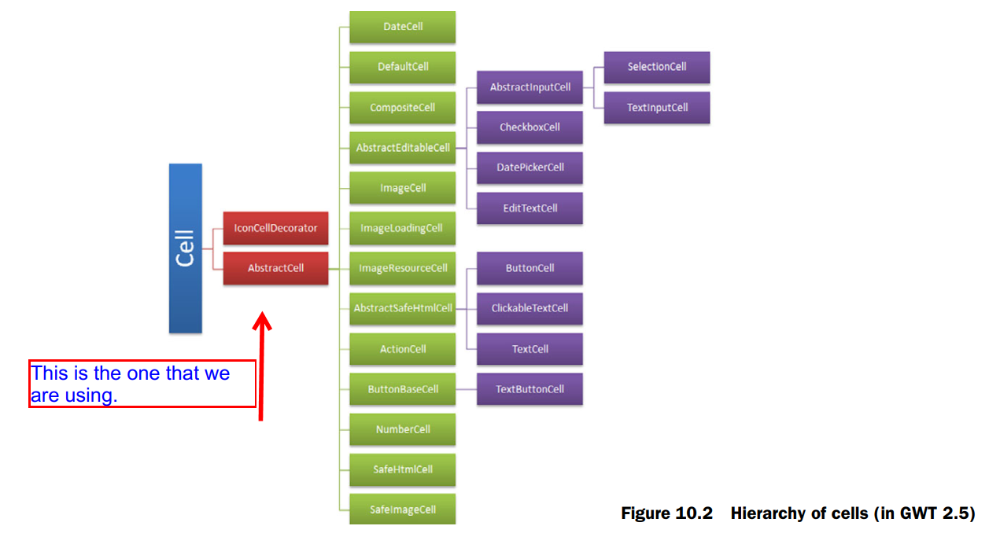
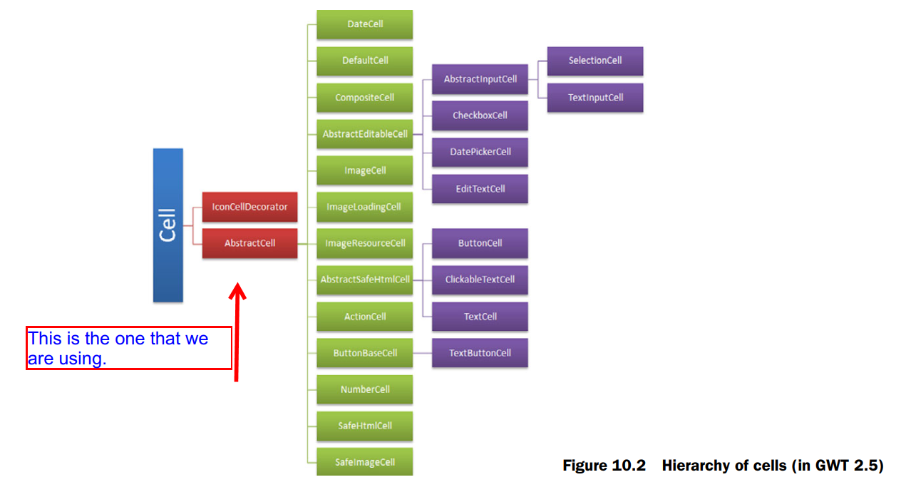
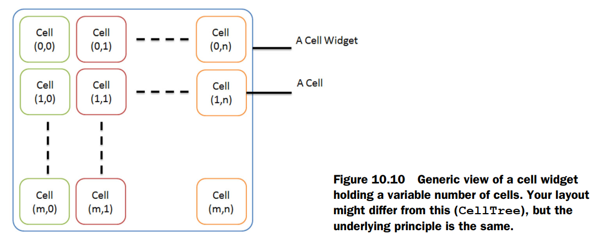
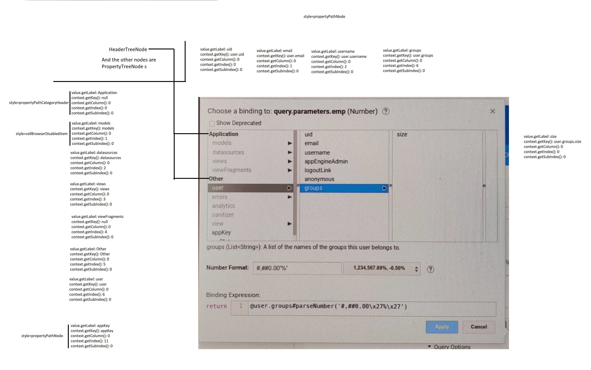
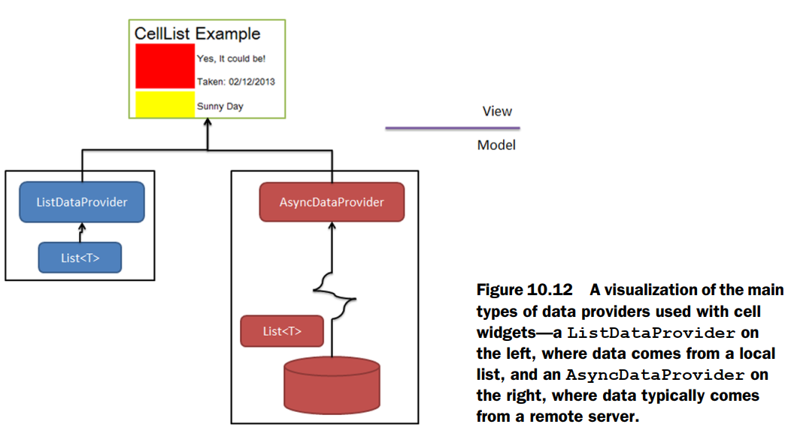

This page contains my notes from the following books:
a) GWT in Action
a) GWT in Action
Index for Book:
Chapter 0 - Interesting Links
Chapter 10 - Data-Presentation (cell) widgets
Interesting Links
Chapter 10: Data-Presentation (cell) widgets
Introduction
- For drawing large data on the screen, we now use cell widgets.
- GWT provides 16 different types of cells such as
- Cells can't survive on their own and need to be used within a cell widget, which provides the necessary context and other management aspects. GWT 2.5 contains six cell widgets:
- Cell widgets are backed by data coming from local or remote sources (using
- Beyond providing the data to cells, cell widgets typically support data paging, sorting, item-selection models, updating of data, as well as data validation.
- GWT provides 16 different types of cells such as
TextCell, EditTextCell, ImageCell, and DateCell, and in addition, we
can create our own custom cells. - Cells can't survive on their own and need to be used within a cell widget, which provides the necessary context and other management aspects. GWT 2.5 contains six cell widgets:
CellWidget, CellList, CellTree, CellBrowser, CellTable, and DataGrid. - Cell widgets are backed by data coming from local or remote sources (using
DataProviders). When a cell widget needs to display data on a page, it hands that
data to specific cells that then produce the necessary HTML for the cell widget. - Beyond providing the data to cells, cell widgets typically support data paging, sorting, item-selection models, updating of data, as well as data validation.
Understanding Cells
- The cell is the basic building block of a cell widget. Each cell is typed so that it knows exactly what kind of data it's going to be expected to render.
- The important point is that cells need to sit within a cell widget in order to be functional.
- A cell is created with an associated type parameter that defines its underlying data type. For example, a cell that displays a String will be defined as Cell<String>, or you can use your own object, as we'll see later for creating Cell<PhotoDetails>.
- Rather than looking at cells based on this hierarchy, they're best thought of as falling into one of three groups:
a) Display cells that render only the data provided
b) Editable cells that give a user the opportunity to change the value shown by the cell
c) Action cells that trigger an action of some sort

- The important point is that cells need to sit within a cell widget in order to be functional.
- A cell is created with an associated type parameter that defines its underlying data type. For example, a cell that displays a String will be defined as Cell<String>, or you can use your own object, as we'll see later for creating Cell<PhotoDetails>.
- Rather than looking at cells based on this hierarchy, they're best thought of as falling into one of three groups:
a) Display cells that render only the data provided
b) Editable cells that give a user the opportunity to change the value shown by the cell
c) Action cells that trigger an action of some sort

Looking at Display Cells
- Display cells are those cells that can be used to present some data to the user - some text or an image or whatever you can think of. You can't do anything else with these
cells such as react to clicks or make changes to the data.
- Earlier we said that a cell needs to be inside a cell container.
- This is an example of how to setup a basic
- Each cell has a default
- The different types of display cells:
- Earlier we said that a cell needs to be inside a cell container.
CellWidget is the simplest type of cell container. It can contain only a single cell. - This is an example of how to setup a basic
TextCell using a CellWidget. Note that you set the value on the cell through the
CellWidget because it holds the context of the cell.
Expand Gist 
render method that's responsible for rendering the cell content in HTML. For instance, this is an example of a render
method. When the Template's photo method is called, the parameter is inserted into the contents of the @Template annotation at the respective
placeholder, giving us the standard HTML that then goes into the cell widget for our display.
Expand Gist
| Cell | Type | Overview |
|---|---|---|
| TextCell | Cell<String> | Displays simple text. |
| NumberCell | Cell<Number> | Can render any of the Java numerical wrapper types. If a com.google.gwt.i18n.client.Number-Format is provided in the constructor, then that's used to format the display (for example, supplying NumberFormat.getPercentFormat() would show numbers as a percent; by default the number is shown in decimal format). |
| DateCell | Cell<Date> | Displays dates as a string. A DateTimeFormat can be provided in the constructor to alter how the date is displayed (for example, DateTimeFormat.getFormat(PredefinedFormat.DATE_SHORT) would display dates in short format; by default the format is long). Additionally, a TimeZone can be provided in the constructor. |
| ImageCell | Cell<String> | Assumes the String passed to it is the URL of an image. The String is sanitized before use, but no attempt is made to ensure the URL is pointing to a valid image or if it's a URI. |
| ImageLoadingCell | Cell<String> | Like ImageCell, but displays some loading HTML (by default an animated image) while waiting for the real image to load. If loading is successful, the loaded image replaces the loading HTML; otherwise some error HTML is displayed. It's possible to provide alternate ImageLoadingCell.Renderers in the constructor for the loading, error, and image display. |
| ImageResourceCell | Cell <ImageResource> | Like ImageCell but takes data from an ImageResource instead of a String. |
| SafeImageCell | Cell<SafeUri> | Like ImageCell but takes data from a SafeUri object instead of a String. |
| SafeHtmlCell | Cell<SafeHtml> | Displays the contents of a SafeHtml object. |
| IconCellDecorator | Wraps another cell and allows an icon to be displayed (in our example we display a delete icon next to a TextCell). |
Updating Edit Cells
- Edit cells allow the user to update the initial value.
- This is how you would create an Edit Cell. Note that in the below example, we have added a handler to the cell widget that handles the updates on the cell. The approach is different depending on the Cell Widget. Now when the user changes the value of the
- There might be cases where the value the cell holds in its model (real value) may be different than the value shown on the screen - that is, you can have pending updates.
There are different ways of "committing" these changes depending on the type of cell that you are using. Refer the text for more explanation. - This is how you would create an Edit Cell. Note that in the below example, we have added a handler to the cell widget that handles the updates on the cell. The approach is different depending on the Cell Widget. Now when the user changes the value of the
EditTextCell, a ValueChangeEvent is raised and is handled by the
handler (and in this case an alert is shown to the user).
Expand Gist
- Cells that have this capability are subclasses of
AbstractEditableCell. - The different types of Edit Cells are:
Cell |
Type |
Overview |
|---|---|---|
| EditTextCell | Cell<String> | A cell that displays simple text, which when clicked turns into an input field. |
| TextInputCell | Cell<String> | A cell that's an input field. |
| CheckboxCell | Cell<Boolean> | A check box. |
| SelectionCell | Cell<String> | A cell that's a drop-down box of strings, one of which can be selected. The data is provided as one of the concrete implementations of Java's List object. |
| DatePickerCell | Cell<Date> | A cell that displays a date and that, when clicked, shows a GWT DatePicker object. A DateTimeFormat can be provided in the constructor to alter how the date is displayed (for example, DateTimeFormat.getFormat (PredefinedFormat.DATE_SHORT) would display dates in short format; by default the format is long). |
Reacting with Action Cells
- Action cells don't allow the user to change the data value directly, but they do allow a trigger of an action of some sort, such as buttons or clickable text.
- The different types of Action Cells are:
Expand Gist
Cell |
Type |
Overview |
|---|---|---|
| ButtonCell | Cell<String> | A cell that represents a standard HTML button. When it's clicked, or the Enter key is pressed when it has focus, the associated ValueUpdater is called. |
| ClickableTextCell | Cell<String> | A cell that has simple text that handles mouse clicks (you can make it look like an HTML anchor by using CSS). Like ButtonCell, the ValueUpdater is called upon a mouse click or a key press. |
| ButtonTextCell | Cell<String> | A cell that acts like a button but is rendered as pure HTML using the Appearance pattern. (GWT documentation hints that this is the way most widgets will go in the future, but that has not happened yet.) |
| ActionCell | Cell<C> | A generic Cell<C> that forwards its value object to an ActionCell.Delegate<C> when it's clicked. This cell renders as a button. Both the button label and the Delegate implementation are supplied at cell instantiation. |
Creating Custom Cells
- If the provided cells aren't quite what you need, you can create your own custom cells. You can create custom cells in couple of ways:
a) Create a composite of existing cells
b) Create a cell from scratch
a) Create a composite of existing cells
b) Create a cell from scratch
Creating Custom Cells using Composite
- Read text for how to do this. You basically use the
- Composite cells display a number of cells together within a span element. This means that generally the component cells will be displayed in left-to-right manner in the order in which they're added.
- First off, you create an
- Cells are added to cells, and cells is then passed to the
- The code looks like the following:
CompositeCell for this purpose. - Composite cells display a number of cells together within a span element. This means that generally the component cells will be displayed in left-to-right manner in the order in which they're added.
- First off, you create an
ArrayList of HasCell<T,C> objects, which will be the list of component cells to be passed to the composite cell's
constructor. T relates to the underlying data object PhotoDetails in this case - and C relates to the type of Cell values. If all the cell values in the
composite are the same, for example, Strings, you can substitute that type here (though in this case maybe the CellList widget is more appropriate for you).
Let's assume you have different cell types - it's best to define them as follows: ArrayList<HasCell<PhotoDetails, ?>> cells = new ArrayList<HasCell<PhotoDetails, ?>>(); - Cells are added to cells, and cells is then passed to the
CompositeCell as follows: CompositeCell<PhotoDetails> compCell = new CompositeCell<PhotoDetails>(cells); - The code looks like the following:
Expand Gist
Creating Custom Cells from scratch
- If you want a little more control over the layout of a custom cell, and in our opinion an easier process than composite cells give you, then you can build a new cell from
scratch by extending
- Never implement the
- Extending
a) Implement the
b) Potentially handle events on the Cell. That is, implement the following method:
- There are three ways that you can render a cell widget yourself:
a) The
b) A
c)
- We will now look at all the three methods, one-by-one...
AbstractCell. - Never implement the
Cell interface yourself, always use AbstractCell. GWT documentation states that the Cell interface may change in
the future but that AbstractCell always provides a stable implementation of Cell. - Extending
AbstractCell means you need to do two things: a) Implement the
render method (that draws the cell), that is, implement the following method: public void render(Context context, PhotoDetails value, SafeHtmlBuilder sb).
Note the type of the value parameter: this always matches the type of the cell's underlying data object, so in our example it's PhotoDetails. b) Potentially handle events on the Cell. That is, implement the following method:
public void onBrowserEvent(Context context, Element parent, PhotoDetails value, NativeEvent event, ValueUpdater<String> valueUpdater) - There are three ways that you can render a cell widget yourself:
a) The
SafeHtmlBuilder passed to the cell's render method by the CellWidget b) A
SafeHtmlTemplate to build the HTML that's then inserted into SafeHtmlBuilder c)
UiBinder (possible from GWT 2.5 onward) - We will now look at all the three methods, one-by-one...
Creating custom cells: Rendering HTML via a
SafeHtmlBuilder
- The
- You can think of the
- To build our cell, we'll append the necessary HTML to it in the cell's
- This is how we write the
render method is called by the cell widget that the cell will be sitting in. That cell widget provides a number of things, for example,
Context and a SafeHtmlBuilder class. - You can think of the
SafeHtmlBuilder instance as a writing stream to the browser that helps protect against XSS (cross-site scripting) attacks by escaping
input where necessary. - To build our cell, we'll append the necessary HTML to it in the cell's
render method. If we were using a cell widget that has more than one cell, then the
updated SafeHtmlBuilder instance would get passed to the next cell by the cell widget so that that cell could draw itself and so on. (This answers the question
about why in the code, in the render method, when we print out the text in the SafeHtmlBuilder, we only see the contents of one specific cell, and
not the entire browser. The append is not appending to the entire browser, rather it is just appending HTML to the HTML of the specific cell widget. Interesting.
So before calling append, the text in the SafeHtmlBuilder is empty.)- This is how we write the
render method using this approach. The first thing to do in any version of the render method is check if the value to be
rendered is not null. Because the render method can be called on instantiation, it might get a null object, so you exit in this case. (Question: Why are we not doing this?)
Expand Gist
Creating custom cells: Rendering HTML via a
SafeHtmlTemplates
-
- This is the render method that we are using in the code.
- In the below example, we have a template interface with a single method (there could be more). Associated with the method is the
- Within the constructor of the cell, you should use the
- From GWT 2.5 onwards, you can declare cells using
- The
SafeHtmlTemplates is an interface whose method declaration(s) contain an annotation describing the HTML they should produce. A key aspect of this template is
that it can contain placeholders for arguments of the method declaration. - This is the render method that we are using in the code.
- In the below example, we have a template interface with a single method (there could be more). Associated with the method is the
@Template annotation that
declaratively describes the HTML you wish to produce. Within the annotation you have placeholders, such as {0}, {1}, {2}, which relate
to the parameters in the method declaration. In this case, they refer to the title, image, and date respectively. - Within the constructor of the cell, you should use the
GWT.create() method to create an instance of Template to tell the compiler to take the
defined interface and annotation, and create the necessary implementation. This is also referred to as deferred binding. - From GWT 2.5 onwards, you can declare cells using
UiBinder. Chapter 6 goes over what UiBinder is. - The
render method is simpler compared to the previous case. We are appending the result of applying data to the template, to the SafeHtmlBuilder
passed in from the cell widget.
Expand Gist
Creating custom cells: Rendering HTML via a
UiBinder
- This is not what we are using in the code. Read text to understand what is going on here. Hopefully, should not be relevant. Hopefully.
Creating custom cells: Handling Events
- Events happen on the cell widget that the cell is associated with but are handled by the cell itself. For a GWT widget, events are internally handled by sinking the events
the cell will handle and overriding the
- The same approach is followed with cells, though in a slightly different way. Events are sunk by calling the parent constructor with their native names (assuming you're extending
- In our two non-UiRenderer versions, that means you write something similar to the following:
onBrowserEvent method with the necessary functionality. - The same approach is followed with cells, though in a slightly different way. Events are sunk by calling the parent constructor with their native names (assuming you're extending
AbstractCell, as you should). - In our two non-UiRenderer versions, that means you write something similar to the following:
public PhotoCellWithTemplate() {super(BrowserEvents.CLICK);}. The next step is to override the onBrowserEvent method. Refer the code snippet above
in order to see how we are doing this. This is not being used in the code though. Reviewing GWT Cell Widgets
- Six different types of cell widgets come in GWT, each providing a different type of functionality:
a)
b)
c)
d)
e)
f)
- This is a view of how
a)
CellWidget: It allows one cell to be managed. b)
CellList: Holds a vertical list of cells, all with the same type. c)
CellTree: A tree structure of cells. Cells of the same level need to be of the same type. But there is no requirement for different levels to have the same
cell type. For example, level 0 could be a TextCell, level 1 a SafeHtmlCell, level 2 an ImageCell, and so on. d)
CellBrowser: A Miller Columns-style component. This is the one that we are using in the code. e)
CellTable: Each cell in a column must be of the same type, but there can be many different types across a row. Any header and footer provided will scroll with
the screen. f)
DataGrid: Like a CellTable, but any headers/footers that are provided are completely static, and data scrolls between them. - This is a view of how
CellTree stores it's cells. The view might differ, but the underlying idea is the same.

What is a Cell Context?
- Up until now we have been using the simple cell widget,
- This
a) The column number: A column index of the cell (zero if there's only one column in the cell widget).
b) A key: A unique key that represents the row value of the widget (usually provided by a
c) An index: An absolute index of the cell.
d) An optional subindex: If the row value renders to a single row element, then this will be zero; else it may be greater than zero (depending on the implementation).
- So what is the difference between all the above things? This is how the things are laid out in the case of cell browser in our case. I don't know why, but for some reason the
CellWidget. This takes a single cell and provides the necessary Context and
SafeHtmlBuilder within which the cell will render itself. - This
Context includes the following: a) The column number: A column index of the cell (zero if there's only one column in the cell widget).
b) A key: A unique key that represents the row value of the widget (usually provided by a
KeyProvider) c) An index: An absolute index of the cell.
d) An optional subindex: If the row value renders to a single row element, then this will be zero; else it may be greater than zero (depending on the implementation).
- So what is the difference between all the above things? This is how the things are laid out in the case of cell browser in our case. I don't know why, but for some reason the
getColumn always returns 0.

Looking at
CellList
-
- Creating a
- Once the widget is created, you need to populate it with data. That can be done in one of several ways that we'll look at next.
- Data to populate the cell widget can be inserted via one of four approaches.
- The direct approach is the equivalent of shoving the data into the cell manually and is probably the least interesting in most real applications. To use it, you call the
and then pass in the data and the row number where we want to start adding the data:
- Alternatively, we can tell the
a)
b)
c)
- We are using this in the code.
- A
- This code creates a new
and then make the necessary updates.
- But note that in the code we are neither using the
- If the data will come from a server, then you need to take into account the fact that it will be asynchronously provided. The
- This is not being used in the code. Refer text for details.
- Paging allows you to look at subsets of your data at a time. This is particularly useful for large data sets arriving from a server - you don't want to have to load everything before you start displaying.
- We are not using paging in the code.
- Handling updates on cells in a
- In the below code snippet, when the user clicks on a cell in the
- However, we don't seem to be using this method to listen to click events on the cell.
- Cell widget views use a
- By default, the
- We are using a
CellList is probably the second simplest of the cell widgets, after CellWidget, because it holds a list of cells, all of the same type.
Creating a CellList
- Creating a
CellList is done by passing the type of cell that the list will hold into the constructor. CellList<PhotoDetails> photoList = new CellList<PhotoDetails>(new PhotoCellWithUiBinder()); - Once the widget is created, you need to populate it with data. That can be done in one of several ways that we'll look at next.
Populating data in a CellList
- Data to populate the cell widget can be inserted via one of four approaches.
- The direct approach is the equivalent of shoving the data into the cell manually and is probably the least interesting in most real applications. To use it, you call the
setRowData method on the widget and pass in the row number where the data will start to be entered and a List of the data. For this, we first create
a list of data: List<PhotoDetails> data = Arrays.asList(new PhotoDetails(...), new PhotoDetails(...)); and then pass in the data and the row number where we want to start adding the data:
photoList.setRowData(0, data);
- Alternatively, we can tell the
CellList to keep an eye on a model and reflect any changes. You do that with a DataProvider, of which there are
three: a)
ListDataProvider: Any changes to a backing list held on the client side are reflected in the widget. b)
AsyncDataProvider: Data is retrieved usually from a server source c)
CustomDataProvider: You manually handle any RangeChangeEvents from the widget

Storing data in ListDataProvider
- We are using this in the code.
- A
ListDataProvider is a List that holds the objects. You can access the list and add or update data, which is then reflected by the widget in the
view. ListDataProvider<PhotoDetails> dataProvider = new ListDataProvider<>() dataProvider.addDataDisplay(photoList); - This code creates a new
ListDataProvider (an empty model) with a type parameter indicating it will hold PhotoDetails objects. The view
(your cell widget) is then added to the list via the provider's addDataDisplay method. When you want to update or add data to the model now backing the
CellList widget, you retrieve a List representation of the model from the ListDataProvider: List<PhotoDetails> theList = dataProvider.getList(); and then make the necessary updates.
- But note that in the code we are neither using the
addDataDisplay method, and nor are we using the getList methods. So the data is being added to
the ListDataProvider in some other way. But we are using a constructor, which passes in two args. So maybe that is it? Storing data in AsyncDataProvider
- If the data will come from a server, then you need to take into account the fact that it will be asynchronously provided. The
AsyncDataProvider handles this
for you. - This is not being used in the code. Refer text for details.
Paging a CellList
- Paging allows you to look at subsets of your data at a time. This is particularly useful for large data sets arriving from a server - you don't want to have to load everything before you start displaying.
- We are not using paging in the code.
Handling User Updates in a CellList
- Handling updates on cells in a
CellList is generally done through an attached ValueUpdater. - In the below code snippet, when the user clicks on a cell in the
CellList, the cell widget determines which cell has been clicked, and then directs the event
to the cell along with the widget's ValueUpdater. - However, we don't seem to be using this method to listen to click events on the cell.
Expand Gist
Managing data with SelectionModels in a CellList
- Cell widget views use a
SelectionModel to determine if an item is selected and and to provide the rules for selection, ie., can only one item be selected? Or
are multiple items selectable? - By default, the
CellList only allows one cell to be selected at a time. You can change this to allow multiple selections. - We are using a
SelectionModel in the code, but we are using a SingleSelectionModel.
Expand Gist
Managing the Keyboard in a CellList
- Cell widgets react to some keyboard events automatically when a selection is made.
- Different kinds of keyboard selection policies are available:
- Different kinds of keyboard selection policies are available:
Value |
Description |
|---|---|
| BOUND_TO_SELECTION | Selection is bound to the selection model. This is the one that we are using in the code. |
| ENABLED | Selection via keyboard is enabled (for example, Ctrl+click or Shift+click). |
| DISABLED | If the user navigates to the end or beginning of the page, then the range is increased. |
Walking through a
CellTree
- A
- Creating a
- Typically the node to show (the second parameter to the constructor), is set to
- The treeViewModel is of type
- The purpose of the
a) the user tries to open a node
b) the user has navigated to the leaf node (that is, there are no more nodes to open)
- Creating a model requires the implementation of the
CellTree provides a tree-like structure for data representation. - Creating a
CellTree is done this way:
CellTree photoList = new CellTree(treeViewModel, null); - Typically the node to show (the second parameter to the constructor), is set to
null. That will reveal the tree's root nodes. Though note that there is nothing
stopping you from opening the tree at a known lower-level node by passing that instead. - The treeViewModel is of type
TreeViewModel. This explains to the widget how the tree works. - The purpose of the
TreeViewModel is two-fold. It lets the widget know what to do when: a) the user tries to open a node
b) the user has navigated to the leaf node (that is, there are no more nodes to open)
- Creating a model requires the implementation of the
TreeViewModel interface together with the getNodeInfo and the isLeaf methods.
Opening a new node in a
CellTree
- The
- The basic pattern within
- The
- So while the example uses this constructor:
- Similarly, for creating the
getNodeInfo provides the children of the value passed to it. - The basic pattern within
getNodeInfo(T value) is to check some property of the value parameter, create an appropriate DataProvider (list or
asynchronous depending on your approach. In our case, we are using ListDataProvider), and then return a new DefaultNodeInfo object created from
the new provider, and the type of cell in which that data will be displayed (we are using an AbstractCell in the code). - The
ListDataProvider is supposed to provide the children of the current node. We are also passing in a key provider, that is an implementation of the
ProvidesKey<T> interface. - So while the example uses this constructor:
ListDataProvider(List<T> listToWrap), we are using this constructor: ListDataProvider(List<T> listToWrap, ProvidesKey<T> keyProvider) - Similarly, for creating the
DefaultNodeInfo, we are using not using the constructor in the example which was this: DefaultNodeInfo(AbstractDataProvider<T> dataProvider, Cell<T> cell) but instead using: DefaultNodeInfo(AbstractDataProvider<T> dataProvider, final Cell<T> cell, SelectionModel<? super T> selectionModel,
final ValueUpdater<T> valueUpdater)